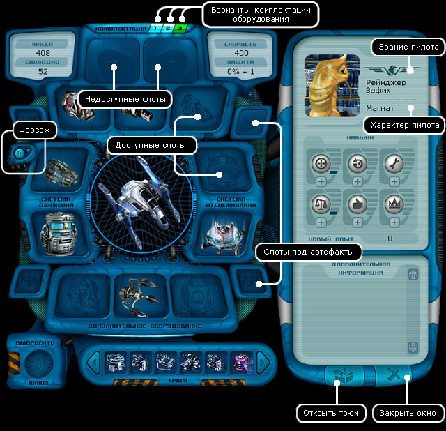
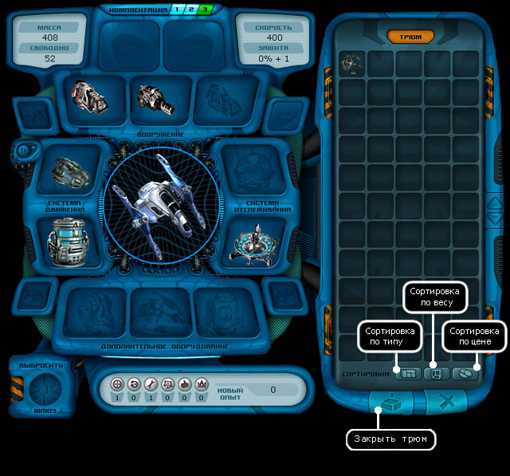

Руководство рейнджера > Панель
навигации > Корабль (S)
|
Руководство рейнджера > Панель
навигации > Корабль (S)
|
| Корабль (S) В этом окне вы видите себя и свой корабль. Вверху указаны основные характеристики корабля: защита, количество свободного места, масса и скорость. В центре окна показаны корпус корабля, а также оборудование и вооружение, установленные в специальные слоты. Внизу можно видеть предметы, лежащие в трюме. В правой части окна показаны имя пилота, его портрет, характер, летное звание, награды и развитые навыков. |

|
Внимание! Все оборудование, которое используется при смене конфигурации, должно находиться в трюме. Также на складе оставленное оборудование использованное в создании конфигурации, но корабль игрока должен находиться на планете или базе, где находится этот склад. Иначе находящееся на складе оборудование не установиться. Предметы можно перекладывать из слотов в трюм и обратно (Alt+правый клик). Для удобного просмотра содержимого трюма его можно "развернуть" соответствующей кнопкой, расположенной в правом нижнем углу. При клике правой кнопкой мыши по какой-либо единице оборудования (например, радару) - она будет автоматически установлена в подходящий слот корпуса, при условии, что он существует и не занят.  Находясь на планете, предметы можно продавать, выбрасывать, чинить или класть на склад. Примечание. В корпусах могут быть активными не все слоты. Это зависит от серии корабля. В центре закрытого слота можно различить надпись n/a. С помощью некоторых видов нестандартного оборудования (артефактов), микромодулей можно увеличить количество активных слотов. Внимание! Для того чтобы оборудование работало, оно должно быть установлено в соответствующий слот. Двигатель должен быть установлен в слот двигателя, сканер - в слот сканера, а осколочное орудие - в оружейный слот. Оборудование или вооружение, лежащее в трюме, не функционирует! Чтобы установить предмет из трюма в слот: 1. Возьмите этот предмет, щелкнув по нему мышкой. Курсор мыши примет вид руки, держащей выбранный предмет, а слоты, в которые можно установить этот предмет, будут подсвечены. 2. Щелкните по тому подсвеченному слоту, который вам нужен. Кстати, есть и другой, более быстрый способ - можно кликнуть правой кнопкой мыши по нужному предмету, и если в корпусе есть подходящий слот, и он свободен, то выбранная единица оборудования автоматически будет установлена!
Быстрое перемещение предмета из склада в трюм: щелчок правый кнопкой мыши на предмете на складе с зажатой клавишей Shift. Быстрое перемещение всех предметов из трюма на склад: нажатие клавиш Ctrl + I. Быстрое перемещение всех предметов из склада в трюм: нажатие клавиш Ctrl + O. Чтобы выбросить предмет: 1. Возьмите этот предмет щелчком мышки по нему. Курсор мыши примет вид руки, держащей выбранный предмет. 2. Перетащите его в раздвижной слот "Выбросить". 3. Кликните по слоту с открытыми створками, чтобы избавиться от предмета. Примечание. Имейте в виду, что если вы выбросите двигатель или бак, то корабль не сможет летать. А выбросив захват, нельзя будет поднять на борт ни одного предмета.
При наведении курсора на тот или иной элемент появляется всплывающее окошко с кратким описанием этого элемента. Например, можно просмотреть характеристики любого оборудования или предмета у вас на борту. Или узнать, сколько необходимо заработать очков для получения очередного летного звания или навыка. Чтобы узнать, сколько очков вам остается до очередного летного звания: Подведите курсор к эмблеме летного звания в правой части экрана. Примечание. Новое звание не будет присвоено вам автоматически, для его получения вам необходимо посетить военную базу. Чтобы узнать, сколько нужно опыта для улучшения конкретного навыка: Подведите курсор к иконке соответствующего навыка в правой части экрана. Описание навыков пилотов: Навык точности, развитый у пилота до 100%, позволяет наносить противнику максимально возможный урон. Например, если в характеристиках орудия сказано, что оно наносит 24-36 повреждений, то при 100% навыке будет наноситься 36 единиц повреждений. Пилот со 100% маневренностью получает в бою минимальные повреждения. Если маневренность и точность сторон совпадают, то наносится случайное повреждение в диапазоне силы действия оружия. (Подробнее о том, как вычисляются повреждения, в зависимости от навыков "Маневренность" и "Точность", смотрите в разделе "Стрельба из орудий".) Знание техники, развитое у пилота до максимума, снижает скорость износа оборудования и дает возможность контролировать до 7 исследовательских зондов. Навык торговли, развитый у пилота до максимума, позволяет продавать оборудование почти по его фактической стоимости. Обаяние пилота, развитое до максимума, смягчает негативную реакцию окружающих на ваши поступки в 2 раза. И в 2 раза усиливает положительную реакцию. Кроме того, благодаря развитому обаянию увеличивается и сумма вознаграждений за выполненные задания. Лидерство Лидерство, развитое до максимума, позволяет иметь в своем подчинении до 5 других рейнджеров. При определенном уровне пиратского рейтинга, позволяет иметь в своем подчинении до 5 пиратов. Однако при проведении переговоров по найму надо учитывать, что вышестоящий по званию рейнджер или пират не станет подчиняться нижестоящему. |